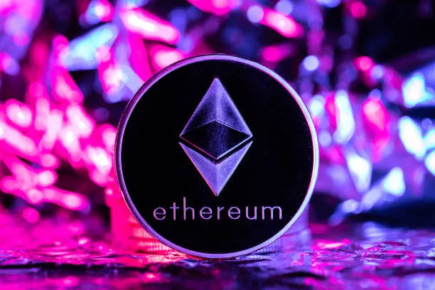
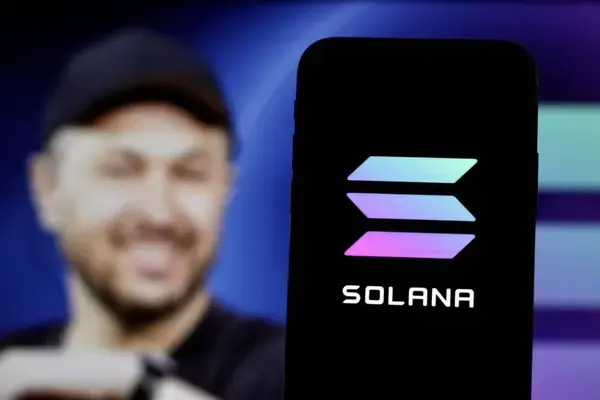
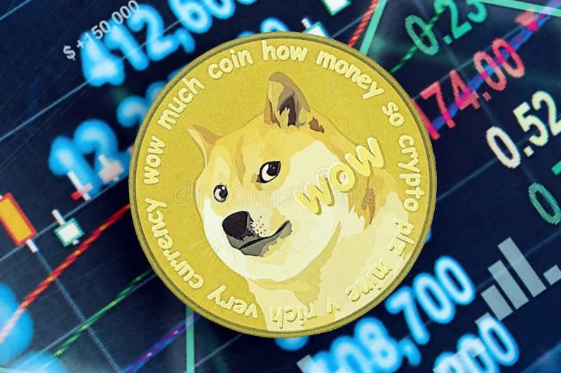

Cryptovalutor:
Bitcoin
Bitcoin är världens första och mest kända kryptovaluta. Den skapades 2009 av en person eller grupp under pseudonymen Satoshi Nakamoto. Till skillnad från vanliga pengar styrs Bitcoin inte av någon bank eller regering. Istället bygger den på en teknik som kallas blockchain – en offentlig och decentraliserad digital liggare där alla transaktioner registreras permanent och transparent. Bitcoin fungerar som digitala pengar som kan skickas direkt mellan personer över internet utan mellanhänder. Nya bitcoins skapas genom en process som kallas mining, där kraftfulla datorer löser komplexa matematiska problem. Det finns ett maximalt antal på 21 miljoner bitcoins, vilket gör den till en begränsad resurs – ungefär som digitalt guld. Värdet på Bitcoin bestäms av utbud och efterfrågan på den öppna marknaden. I september 2026 handlas en bitcoin för omkring 77 000–78 000 amerikanska dollar. Priset är mycket volatilt och har tidigare nått toppnivåer över 126 000 dollar. Många ser Bitcoin både som en investering och som ett sätt att skydda värdet mot inflation, medan andra varnar för de stora riskerna och prissvängningarna.
Etherium

Ethereum är den näst största kryptovalutan efter Bitcoin och lanserades 2015 av Vitalik Buterin. Till skillnad från Bitcoin, som främst fungerar som digitala pengar, är Ethereum en komplett plattform för smarta kontrakt och decentraliserade applikationer (dapps). Ethereum bygger på blockchain-teknik, men har en mer avancerad funktion: smarta kontrakt. Det är program som körs automatiskt när vissa villkor uppfylls, utan att någon mellanhand behövs. På Ethereum kan man bygga allt från decentraliserade börser och NFT-marknader till lånplattformar och spel. Nätverket använder sin egen kryptovaluta, ether (ETH), både som betalningsmedel och för att betala transaktionsavgifter (gas). Sedan 2022 använder Ethereum “proof-of-stake” istället för den energikrävande mining-metoden, vilket gör det mer miljövänligt. Det finns ingen absolut övre gräns för hur många ether som kan skapas, men utbudet styrs av nätverkets regler. Värdet på ether bestäms av utbud och efterfrågan. I september 2026 ligger priset på omkring 2 500–2 520 amerikanska dollar. Det har tidigare nått toppnivåer nära 4 950 dollar. Ethereum ses ofta som mer tekniskt och användbart än Bitcoin, men priset är fortfarande mycket volatilt och påverkas starkt av utvecklingen inom decentraliserad finans (DeFi) och nya applikationer.
Solana

Solana är en modern blockchain-plattform som lanserades 2020 av Anatoly Yakovenko. Den är känd för att vara extremt snabb och billig att använda jämfört med äldre nätverk som Ethereum. Solana kan hantera tusentals transaktioner per sekund med mycket låga avgifter, vilket gör den populär för decentraliserade applikationer, NFT:er, DeFi och meme-coins. Till skillnad från många andra blockchains använder Solana en unik kombination av tekniker, bland annat Proof of History (PoH) tillsammans med Proof of Stake. Det gör att nätverket kan bekräfta transaktioner nästan i realtid utan att behöva vänta på att flera noder ska komma överens på samma sätt som i äldre system. Nätverkets egen kryptovaluta heter SOL och används både för att betala avgifter och för staking (att låsa tokens för att säkra nätverket och få belöning). Solana har vuxit snabbt och blivit en av de mest använda plattformarna för nya projekt, även om nätverket tidigare haft problem med tillfälliga avbrott. Värdet på SOL bestäms av marknadens utbud och efterfrågan. I september 2026 ligger priset på omkring 101–102 amerikanska dollar. Det har tidigare nått toppnivåer nära 296 dollar. Solana ses ofta som ett av de mest lovande alternativen till Ethereum tack vare sin hastighet och låga kostnader, men priset är fortfarande mycket volatilt.
Dogecoin

Dogecoin är en kryptovaluta som skapades 2013 som ett skämt baserat på det populära internetmemet med Shiba Inu-hunden ”Doge”. Den lanserades av Billy Markus och Jackson Palmer och var från början tänkt som en rolig och lättsam alternativ till Bitcoin. Trots det har Dogecoin vuxit till en av de mest kända och handlade kryptovalutorna. Tekniskt sett är Dogecoin en fork av Litecoin och använder Proof of Work-algoritmen Scrypt. Till skillnad från Bitcoin har Dogecoin ingen hård övre gräns för hur många mynt som kan skapas – det tillkommer nya DOGE kontinuerligt, vilket gör inflationen relativt hög. Transaktionerna är snabba och avgifterna mycket låga, vilket gjort den populär för små betalningar, tips på sociala medier och donationer. Dogecoins värde styrs framför allt av communityn och mediauppmärksamhet snarare än tekniska innovationer. Elon Musks tweets och stöd har flera gånger fått priset att stiga kraftigt. I september 2026 ligger priset på omkring 0,084 amerikanska dollar. Den historiska toppen nåddes 2021 på cirka 0,74 dollar. Dogecoin ses fortfarande som en meme-coin, men har en stor och engagerad användarbas och används flitigt för mikrobetalningar och som spekulativ investering. Priset är dock extremt volatilt.